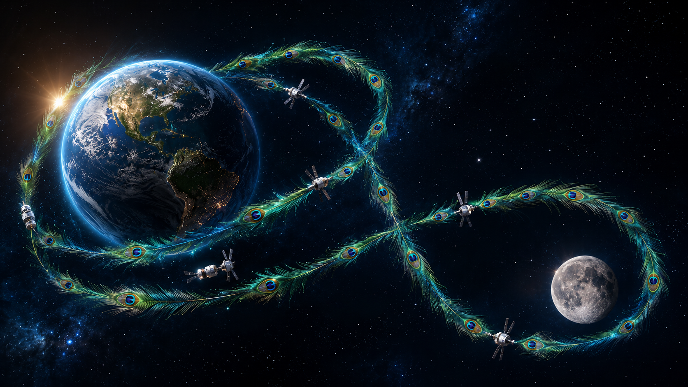
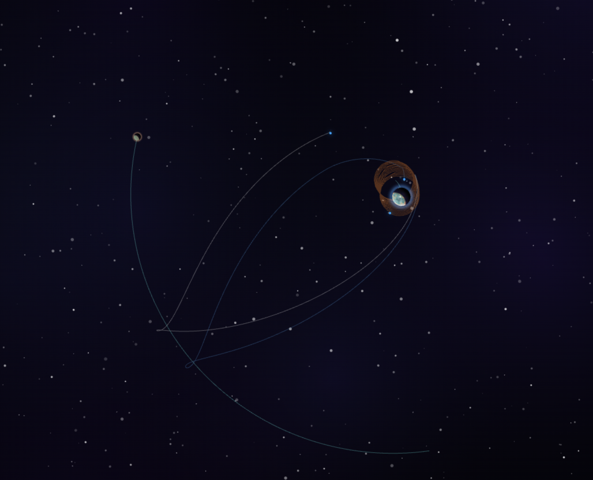

Étage 1 — SLS
0,0006
Masse à sec · 60 % de la pile

Pour la première fois depuis Apollo 17 en 1972, un équipage humain s'apprête à quitter l'orbite terrestre basse. Quatre astronautes, trois véhicules superposés, une trajectoire qui ne se met jamais en orbite autour de la Lune mais que la gravité lunaire elle-même ramène à la Terre. Ce document explique d'abord la mission réelle, étape par étape, puis montre comment chaque phase est reproduite, fidèlement et avec ses approximations honnêtes, dans la simulation 2D du preset Nebula Orbit.
Il y a un peu plus de cinquante ans, Eugene Cernan refermait l'écoutille du module lunaire Challenger. Personne, depuis, n'a quitté l'orbite terrestre basse. Artemis II rouvre la porte — mais sans alunir.
Le 14 décembre 1972, le module lunaire Challenger d'Apollo 17 décollait de la vallée de Taurus-Littrow. Depuis ce jour, aucun être humain n'est jamais reparti au-delà de l'orbite terrestre basse, ce mince anneau situé à quelques centaines de kilomètres au-dessus de nos têtes. Toutes les stations spatiales habitées — Saliout, Skylab, Mir, l'ISS — orbitent à moins de 500 km. La Lune, elle, est à 384 400 km.
Artemis II changera cela. Au cours d'un vol d'environ dix jours, un équipage de quatre personnes embarquera à bord du vaisseau Orion, sera propulsé par la fusée la plus puissante actuellement en service, et effectuera un survol circumlunaire. Le vaisseau ne se mettra pas en orbite autour de la Lune. Il passera à environ 10 300 kilomètres de la face cachée, puis la gravité lunaire elle-même infléchira sa trajectoire pour le ramener vers la Terre. Aucune mise à feu majeure ne sera nécessaire pour le retour.
Cette trajectoire porte un nom : on l'appelle un retour libre. C'est l'un des objets les plus élégants de la mécanique céleste — un compromis entre la simplicité, la sécurité et l'économie de propergol qui a déjà servi pour Apollo 8, 10 et 11, puis a sauvé Apollo 13. Cette même trajectoire constitue le cœur d'Artemis II.
Ce document raconte la mission dans son intégralité. La première moitié décrit le vrai vol : son équipage, son matériel, sa physique. La seconde moitié explique comment le simulateur Nebula Orbit reproduit ce vol, manœuvre par manœuvre, dans un univers 2D simplifié. Enfin, nous comparerons honnêtement ce que la simulation capture et ce qu'elle simplifie.
Une feuille de route en plusieurs missions, dont Artemis II est le second vol, mais le premier vol habité.
Le programme Artemis est l'initiative américaine — menée par la NASA, mais avec des contributions européennes, canadiennes et japonaises — visant à ramener des humains sur la Lune dans les années 2020. Son architecture est progressive :
Artemis II joue un rôle bien précis dans cette progression : vérifier qu'Orion fonctionne avec un équipage à bord, dans les conditions du vol lunaire. Tous les systèmes — survie, communications longue distance, pilotage manuel, navigation — doivent être testés en présence humaine avant qu'on confie un alunissage au programme. Le retour libre est la garantie de sécurité : si quelque chose tombe en panne en cours de route, la trajectoire seule ramène l'équipage.
Quatre astronautes — trois Américains et un Canadien — prendront place à bord d'Orion. Première mission de plusieurs records.
Pilote de chasse naval américain, ancien commandant de l'ISS en 2014 (Expedition 41). 165 jours en orbite avant Artemis II.
Pilote d'essai de l'US Navy. A volé sur la mission SpaceX Crew-1 (2020–2021), 168 jours sur l'ISS. Premier Afro-Américain à voler vers la Lune.
Ingénieure en électrique. Détient le record du plus long vol spatial féminin en continu (328 jours, 2019–2020). Première femme à voler vers la Lune.
Pilote de chasse canadien. Premier vol spatial pour lui, et premier non-Américain à voler au-delà de l'orbite terrestre basse.
Trois premières dans ce manifeste : la première femme, le premier Afro-Américain, et le premier non-Américain à voler au-delà de l'orbite terrestre basse. Cinquante-deux ans après le dernier vol Apollo, c'est une déclaration d'ouverture.
SLS Block 1, l'étage cryogénique ICPS, et le vaisseau Orion. Au décollage, la pile mesure 98 mètres et pèse 2 600 tonnes. Six jours plus tard, il ne restera qu'Orion — environ 26 tonnes.
Vingt mille fois plus puissant qu'un moteur de voiture. Réservoir d'hydrogène liquide à −253 °C, oxygène liquide à −183 °C, quatre moteurs RS-25 récupérés des navettes spatiales.
Deux propulseurs latéraux à propergol solide, chacun 730 tonnes de combustible. Brûlent pendant 126 secondes, fournissent 75 % de la poussée au décollage, puis sont largués dans l'Atlantique.
Interim Cryogenic Propulsion Stage. Hérité de la fusée Delta IV. Un seul moteur RL-10 hydrogène-oxygène. C'est lui qui effectuera l'injection trans-lunaire.
Crew Module (capsule équipage, 6 m³ habitables pressurisés, héritière de la forme Apollo) et European Service Module fourni par l'ESA — propulsion, énergie, support vie, panneaux solaires.
Pourquoi étager ? Une fois un réservoir vide, c'est du poids mort. Pour continuer à accélérer, il faudrait pousser ces réservoirs vides — ce qui coûterait énormément de propergol. Les larguer permet aux étages supérieurs, plus légers, d'utiliser des moteurs bien plus modestes. Chaque moteur successif est plus petit : SLS 39 000 kN → ICPS 110 kN (354× plus petit) → Orion 26 kN (encore 4× plus petit).
Le concept central de la mission. Une trajectoire conçue dès le départ pour ramener l'équipage même si aucun moteur ne se rallume jamais.
Imaginons que vous lanciez une balle vers le haut d'une colline. Si vous lui donnez juste assez de vitesse, elle atteindra le sommet, ralentira jusqu'à s'arrêter, puis redescendra par le même chemin. Un retour libre repose sur la même intuition, à ceci près que la "colline" est le puits gravitationnel terrestre, et qu'au "sommet" de cette montée, la Lune est là, prête à incurver la trajectoire.
Mathématiquement, on parle d'une ellipse très allongée dont l'apogée (le point le plus éloigné de la Terre) coïncide avec l'orbite lunaire. Si le timing est juste, Orion atteint l'apogée au moment précis où la Lune passe par là. Mais — et c'est crucial — la mise à feu ne vise pas le centre de la Lune. Elle vise un point situé environ 10 000 km au-delà de la face cachée.
En arrivant à la sphère d'influence lunaire, Orion ne se met pas en orbite : il passe en hyperbole derrière la Lune, et la gravité de celle-ci change la direction du vaisseau d'environ 90° à 180°. Vu depuis la Terre, c'est comme si la trajectoire faisait un grand huit autour des deux corps. Vu depuis Orion, c'est un demi-tour cosmique gratuit.
Apollo 8, 10 et 11 ont toutes utilisé des variantes du retour libre pour leurs vols aller. La nouveauté n'est pas le concept — c'est qu'Artemis II y reste accroché du début à la fin. Apollo allait au-delà : une fois rassurés, les vaisseaux Apollo effectuaient une insertion en orbite lunaire en allumant leur moteur principal au passage. Cette insertion les engageait sur une autre trajectoire ; sans la mise à feu de sortie, ils restaient prisonniers de la Lune.
Apollo 13 a illustré la sécurité du retour libre. Quand le module de service explosa, l'équipage utilisa la gravité lunaire et quelques mises à feu mineures du module lunaire pour rentrer. Ce que faisait Apollo 13 dans l'urgence, Artemis II le fait par conception.
L'idée centrale. Le retour libre n'est pas un tour de magie — c'est la conséquence mathématique d'une géométrie soigneusement choisie. La gravité fait le travail. Le seul vrai coût est de viser légèrement à côté de la Lune, et non en plein dessus.
Du décollage à l'amerrissage, dix jours de mission divisés en six chapitres distincts.
Au Centre spatial Kennedy en Floride, à T-0, les quatre moteurs RS-25 et les deux SRB s'allument. La poussée combinée — environ 39 000 kilonewtons, soit 15 % de plus qu'une Saturn V — soulève la pile.
À T+2 minutes, les SRB épuisés sont largués et tombent dans l'Atlantique. À T+8 minutes, l'étage central a brûlé tout son hydrogène et son oxygène : il est largué à son tour. La pile est désormais l'ICPS surmontée d'Orion, en orbite terrestre basse autour de 185 × 1 800 km.
L'ICPS effectue une première mise à feu qui élève l'apogée à environ 71 000 km. C'est unique à Artemis II — aucune mission Apollo n'a fait cela. Pendant 24 heures, Orion va parcourir cette orbite très allongée, périgée bas, apogée trois fois plus haut que la Lune en distance.
Pourquoi ? Pour tester tout avant de s'engager : le support vie, les communications dans l'espace profond, la propulsion d'Orion, et — chose rare — une simulation de rendez-vous orbital où l'équipage utilise les commandes manuelles d'Orion pour s'approcher puis s'éloigner du second étage ICPS désormais inerte. Si quelque chose ne fonctionne pas, Orion peut encore rebrousser chemin sans avoir quitté la sphère d'influence terrestre.
De retour au périgée — là où la vitesse orbitale est maximale et le puits gravitationnel le plus profond — l'ICPS rallume son moteur RL-10 une dernière fois. Cette mise à feu, d'environ 18 minutes, ajoute environ 3,05 km/s de delta-V. C'est l'injection trans-lunaire.
Désormais, Orion est sur sa trajectoire vers la Lune. Pendant les quatre jours qui suivent, il dérive — pas de moteur principal allumé, juste de petites corrections d'attitude. L'ICPS est largué peu après ; il continuera sur une trajectoire désaffectée, où la gravité solaire le perdra dans le système solaire intérieur.
Au cinquième jour, Orion atteint la sphère d'influence lunaire. La Lune apparaît énorme — sa face cachée, jamais vue depuis Apollo 17, s'étend devant les hublots. Le vaisseau passe à environ 10 300 km au-dessus du sol lunaire.
L'équipage est désormais à environ 400 000 km de la Terre, soit 1,5 % de plus que ne l'a fait Apollo 13 (record précédent à 400 171 km). Trois nouveaux records personnels par astronaute, tous battus simultanément.
Aucune mise à feu n'a lieu. La gravité lunaire courbe la trajectoire d'Orion d'environ 180° et la renvoie vers la Terre.
La géométrie initiale du retour libre fait son travail. Quelques petites corrections de mi-parcours (manœuvres de l'ordre de 1 m/s) peuvent affiner le couloir de rentrée — mais aucune mise à feu majeure n'est planifiée. C'est exactement le scénario qui a sauvé Apollo 13.
Orion regagne progressivement le puits gravitationnel terrestre. Sa vitesse, qui avait diminué jusqu'à environ 200 m/s à l'apoapsis, recommence à grimper, jusqu'à atteindre 11 km/s au moment de la rentrée. C'est trois fois plus vite qu'un retour depuis l'ISS.
À environ T+10 jours, le module de service européen est largué (il sera détruit dans l'atmosphère). La capsule équipage seule poursuit, protégée par un bouclier thermique ablatif. À 11 km/s, l'entrée dans l'atmosphère porte le bouclier à environ 2 800 °C — plus chaud que la fusion de l'acier.
Pour gérer cette chaleur extrême, Orion utilise une rentrée par "skip" : la capsule rebondit une fois sur les couches supérieures de l'atmosphère, ralentit, puis redescend pour l'entrée finale. Cela répartit la dissipation thermique et permet un atterrissage plus précis.
Trois parachutes drogue puis trois parachutes principaux s'ouvrent à 7 500 m. La capsule amerrit dans l'océan Pacifique au large de la Californie. L'équipage est récupéré par la marine américaine. Fin de mission.
Le saviez-vous ? La capsule Orion utilise le même profil de forme — un cône émoussé — que la capsule Apollo. Cette géométrie a été choisie il y a soixante ans précisément parce qu'elle autostabilise dans l'atmosphère : si la capsule entre légèrement de travers, l'aérodynamique la redresse automatiquement, bouclier en avant. C'est l'un des héritages les plus durables du programme spatial américain.
Nebula Orbit modélise Artemis II en deux dimensions, à l'aide d'un solveur N-corps. Trois étages, trente-huit manœuvres, dix actes.
Le simulateur ne triche pas. À chaque pas de temps, il calcule la gravité exercée par chaque corps (Terre, Lune, vaisseau) sur chaque autre corps. La trajectoire d'Orion émerge naturellement de ces forces — la gravité terrestre, la gravité lunaire, et la poussée du moteur quand il est allumé. Aucune trajectoire n'est "scriptée" ; le retour libre que vous voyez à l'écran est la conséquence physique de la mise à feu initiale.
Trois éléments composent le vaisseau dans le preset 1ArtemisMultiStage.json :
Les proportions sont volontairement plus plates que dans la réalité (où l'étage central représente 97 % de la pile). À l'échelle du jeu, les vrais ratios rendraient les étages supérieurs invisibles ; la simulation choisit l'instructif sur le strictement véridique.
La mission se déroule en dix actes, sans changement de vitesse de simulation — toutes les manœuvres ont lieu à 1× temps réel. Vous voyez l'ascension décoller, l'orbite haute s'allonger, l'injection trans-lunaire propulser le vaisseau vers la Lune, la trace se courber autour de notre satellite, et le vaisseau revenir, ralentir, et se poser.

Les trente-huit étapes du preset, regroupées en dix actes mécaniques. Chaque acte correspond à une phase de la mission réelle.
Le vaisseau part posé verticalement sur Terre. Une première mise à feu sur l'axe vertical libère le sol. Puis, alternativement, le vaisseau s'incline un peu plus à chaque étape (20°, 40°, 40°, 5°, 15°) et poursuit sa montée avec les nouveaux angles. La poussée acquise se répartit progressivement entre vertical et horizontal — c'est la signature classique d'une gravity turn, exactement comme le fait un vrai SLS.
L'étage SLS Core s'épuise une fois l'altitude orbitale atteinte ; sa séparation et la mise en orbite proprement dite sont traitées dans l'acte suivant.
L'étage 1 a fait son travail. Une manœuvre stage dédiée le jette : la pile crée à l'écran un débris orange (la masse à sec et le carburant restant du premier étage), et le vaisseau principal recalcule sa masse à 0,0004 — soit 40 % de la masse de départ. C'est l'ICPS, désormais en tête, qui prend immédiatement le relais : l'autopilote auto_circularize affine la vitesse et ferme l'orbite basse en circulaire propre.
L'ICPS s'allume une première fois pour élever l'apogée. Le vaisseau dérive jusqu'au plus haut de cette orbite haute (altitude ~50), puis redescend en frôlant le périgée (altitude ~6). Un second auto-circularize ramène le vaisseau en orbite basse circulaire — propre, prêt pour le transfert lunaire. C'est l'écho direct des 24 heures de checkout réelles.
L'autopilote attend que la Lune et le vaisseau soient en bonne position relative — c'est la fenêtre de transfert de Hohmann. Au moment précis où l'angle de phase est correct, l'autopilote ICPS calcule et tire la mise à feu d'injection. Cette dernière oriente Orion sur une ellipse trans-lunaire qui le mènera à la Lune.
Sa mission accomplie, le second étage est largué. Un débris argenté apparaît à l'écran, et la masse du vaisseau chute à 0,0001 — soit 10 % de la masse de départ. Orion CSM continue seul vers la Lune.
L'autopilote de transfert vise par défaut le centre de la Lune. Or, pour un retour libre, on ne veut pas heurter la Lune — on veut passer à côté. Orion allume son moteur AJ-10 pendant un dixième de seconde, avec une poussée minuscule (10⁻⁵ unités). Cette nudge ridicule, intégrée sur les quatre jours de croisière à venir, suffit à décaler le point d'arrivée de plusieurs dizaines d'unités-sim — assez pour que la trajectoire passe au-dessus du sol lunaire au lieu de s'y écraser.
Plus aucune mise à feu pendant des jours de simulation. Le vaisseau monte vers la Lune, atteint une altitude de l'ordre de 300 (mesurée depuis la Terre), passe dans la sphère d'influence lunaire, est dévié par la gravité de la Lune, puis commence à retomber vers la Terre. Tout cela sans aucun moteur allumé — c'est exactement le retour libre, vu en accéléré dans la trace de la simulation.
Le vaisseau, accéléré par la gravité terrestre, redescend. À une altitude descendante de 250, l'autopilote sort de la phase de croisière et entre en approche. La vitesse augmente rapidement à mesure que l'altitude diminue — c'est la conséquence directe de la conservation de l'énergie orbitale : tout ce qui descend dans un puits gravitationnel y gagne de la vitesse.
Le simulateur n'a ni atmosphère ni parachutes : impossible de freiner par la traînée comme le ferait la vraie capsule. À la place, Orion utilise son moteur de service comme propulsion de freinage. Une première mise à feu rétrograde commence à baisser l'orbite. À altitude 58, un auto-circularize stabilise une orbite basse de parking. L'attitude bascule en radial out — c'est-à-dire le vaisseau pointé tour-vers-le-haut, prêt pour la descente verticale.
Le clou du spectacle. Une seconde mise à feu rétrograde fait chuter le périgée sous la surface terrestre — le vaisseau est désormais engagé dans la descente. Il tombe en chute libre, droit comme un I, jusqu'à atteindre une altitude de 25.
Alors, juste au-dessus du sol, le moteur se rallume une dernière fois, rétrograde — le moteur pointé vers le bas, le vaisseau pointé vers le haut, comme un Falcon 9 qui revient se poser à Cape Canaveral. C'est ce qu'on appelle un suicide burn : une seule mise à feu, calibrée pour annuler la vitesse verticale juste avant le contact.
Puis le vaisseau se redresse une dernière fois, attend de descendre jusqu'à 5 unités du sol, et toucher.
Manœuvres autopilote, manœuvres manuelles. Certaines mises à feu sont calculées en boucle fermée par l'autopilote (auto_circularize, auto_transfer) — il vise un état orbital cible et ajuste la poussée jusqu'à l'atteindre. D'autres (les burn simples) ont leur poussée et leur durée fixées à l'avance. Les premières s'adaptent automatiquement à la masse changeante ; les secondes ont été calibrées à la main pour chaque étage.
La simulation est honnête sur ses approximations. Voici, point par point, ce qui correspond et ce qui s'écarte.
Une simulation pédagogique. Cette simulation n'est pas un substitut à un solveur professionnel — elle ne calcule pas avec assez de précision pour planifier une vraie mission. Mais elle est fidèle aux concepts : la mécanique orbitale, la dynamique du staging, la gravité comme force de cohésion, le retour libre comme géométrie élégante. Ce qu'elle simplifie, elle le simplifie honnêtement.
Le profil de vol authentique tel qu'il a été exécuté entre le 1er avril 2026 (décollage) et le 10 avril 2026 (amerrissage). Durée officielle : 9 jours, 1 h 32 min. Toutes les altitudes proviennent du NASA Artemis II Press Kit et du graphique Ascent and Mission Timeline.
Ce que cette chronologie ajoute. Les chapitres précédents décrivent la géométrie du retour libre et la structure des dix actes de simulation. Cette table donne les chiffres réels — les altitudes mesurées au pied près par la NASA — pour ancrer cette mécanique dans la mission qui s'est effectivement déroulée entre le 1er et le 10 avril 2026.
Ce que la mission Artemis II nous dit de notre époque — et ce que cette simulation espère transmettre.
Artemis II n'est pas la mission la plus ambitieuse de notre siècle. Elle ne pose personne sur la Lune. Elle ne ramène pas d'échantillons. Elle ne construit rien. Sur le papier, elle ressemble à un détour — un test, une répétition générale avant les vraies grandes manœuvres qui suivront.
Mais c'est précisément ce qui la rend importante. Avant Artemis II, aucun être humain n'a quitté l'orbite terrestre basse depuis cinquante-deux ans. Quatre personnes vont y aller. Trois d'entre elles font leurs premières — première femme, premier Afro-Américain, premier non-Américain à voyager au-delà de la LEO. La trajectoire choisie est la plus sûre possible : si le moteur principal ne se rallume jamais, la gravité ramène l'équipage. La mécanique céleste fait office de filet de sécurité.
Ce document a essayé d'expliquer comment cette mécanique fonctionne. Le retour libre n'est ni mystérieux ni miraculeux — c'est de la géométrie orbitale, une trajectoire choisie avec soin pour que le coût en propergol soit minimal et le coût en risque encore plus bas. C'est l'idée pour laquelle la simulation Nebula Orbit a été instrumentée.
Si vous regardez la trace de la simulation se dérouler — la boucle de l'orbite basse, l'allongement de l'orbite haute, le grand arc trans-lunaire, le retour qui se courbe autour de la Lune et revient — vous voyez la même géométrie que Reid Wiseman et son équipage verront depuis leurs hublots. À l'échelle près, à la dimension près, le dessin est le même. C'est tout l'intérêt.